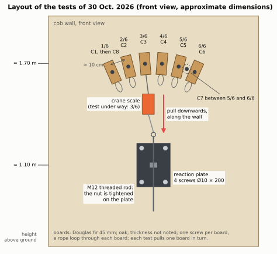
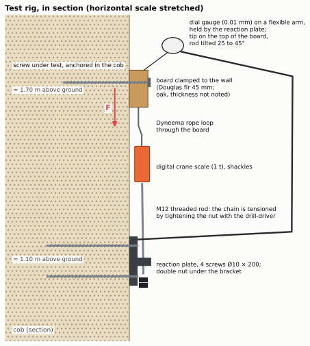
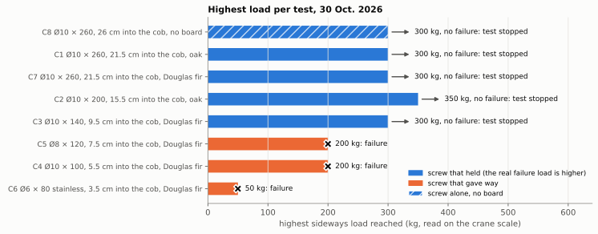
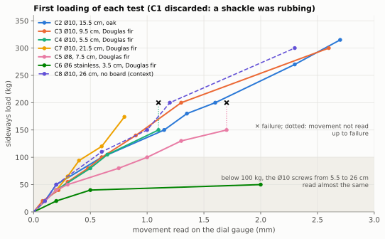
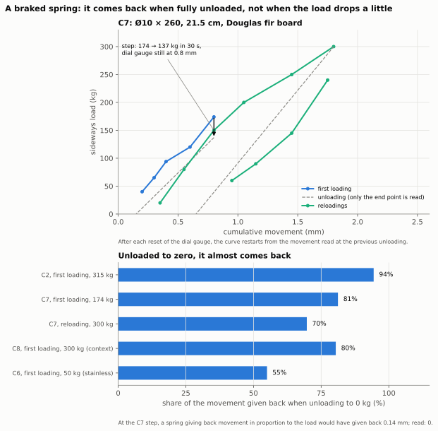
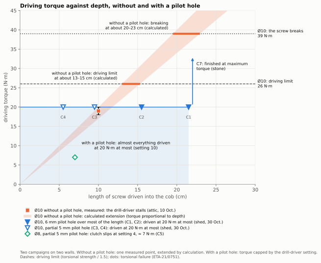
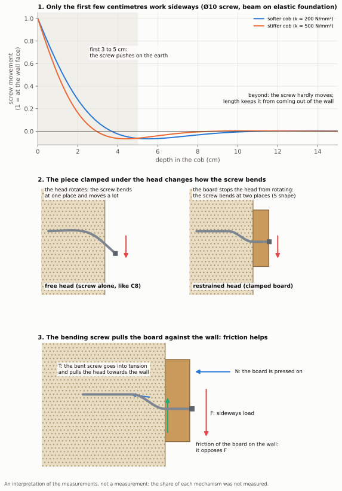
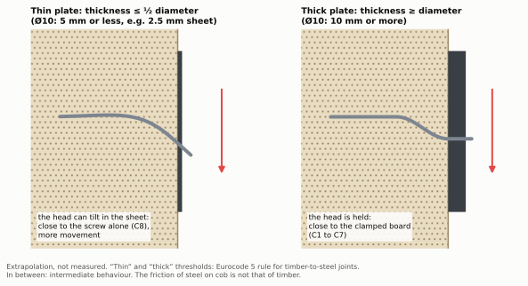

Screws in cob
How much a screw loaded sideways holds in an old cob wall, and how to drive it. Field report on eight tests.
Contents
- In short
- Why this paper
- Where we start from
- The tests
- Results
- Recommendations
- Limits and next steps
- Appendix A — The screws
- Appendix B —
Modelling: what we think is happening
- 1. Only the first few centimetres of the screw work sideways
- 2. The piece clamped under the head changes everything
- 3. The bending screw pulls on the piece and clamps it to the wall
- 4. The braked spring: four explanations
- 5. What remains unexplained
- 6. The steel plate
- 7. The measurements that would settle it
- Appendix C — Raw readings and calibration
- Appendix D — State of the art: what is said, and what has been measured elsewhere
- References
Identifier: Zenodo DOI assigned to each version, see the repository page. Readings, photos, figures and calculations: https://github.com/Remi-C/renovation-terre-crue, website https://remi.cura.info/renovation-terre-crue/. Text, data and figures under the CC BY 4.0 licence. Feedback: the GitHub repository’s “issues”.
In short
- In an old, dry wall of cob (French bauge), we ran eight tests on off-the-shelf screws loaded sideways, along the wall: one test per configuration, in one day, with ordinary equipment.
- A 10 mm diameter wood screw, driven with a pilot hole, 9.5 to 21.5 cm into the cob and clamping a board against the wall, carried 300 to 350 kg without failing. The tests were stopped before failure: the real limit is higher.
- Too short, the screws gave way: at about 200 kg for a 10 mm screw 5.5 cm into the cob and an 8 mm screw 7.5 cm in; from 50 kg for a small 6 mm stainless steel screw 3.5 cm in.
- What we take from this: 8 mm diameter for a few tens of kilos, 10 mm above that; 8 cm into the cob at the very least, 10 cm preferably; always clamp a piece against the wall.
- Driving: without a pilot hole, a 10 mm screw, though shorter, stalled the drill-driver at 18–20 N·m at about 10 cm of cob, and driving it was very hard; with a 5 or 6 mm pilot hole, almost all were driven at 20 N·m at most, down to 21.5 cm. The pilot hole clearly reduces the driving torque and makes it possible to stay within the screw manufacturer’s recommendations. Which pilot hole for which diameter and which depth remains to be measured.
- This paper gives neither an allowable load nor a safety margin: it sets our measurements beside the margins used elsewhere. Pull-out (screw pulled along its axis) is the subject of a second campaign, in November 2026.
Why this paper
Renovating a cob house means that one day you fix something to the wall: an insulation frame, shelves, a joist hanger. Screws are not the answer to everything; for heavy loads, the guides suggest rods through the wall or timber pieces embedded in the earth. But a screw whose holding power is known adds another string to the renovator’s bow.
These tests are not professional tests. They were carried out by a private individual renovating his house, on a wall at his disposal: getting access to an old building to run tests on is not easy. We publish them with their limits, and we ask for feedback from those who fix things into earth every day.
A screw is loaded sideways (also called “in shear”) when it is pulled parallel to the wall, the way the weight of a shelf pulls on its screws; it is loaded in pull-out when it is pulled along its axis, out of the wall. We distinguish what is measured (read on the crane scale or the dial gauge), estimated by the author (by eye or from memory), calculated from the measurements, and assumed (a likely explanation, not checked).
Where we start from
The French good-practice guides for earth building accept screwing directly into the wall. Those for cob and for earth brick mention the « vis à bois entrée directement dans le matériau sans pré-trou ni chevilles dans la mesure où les charges sont faibles et sans trop serrer » [wood screw driven directly into the material, without pilot hole or wall plugs, as long as the loads are light, and without over-tightening], in a box declared non-normative [1, 2]; the one for rammed earth accepts « vissage direct » [direct screwing] for light loads [3]. An eco-building association, APTE, advises screws at least 10 to 15 cm deep in rammed earth [4]; an English-speaking cob practitioner, screws of 12.7 cm or more [5].
None of these sources gives a load or a diameter. Yet « sans pré-trou » [without a pilot hole] means nothing without a diameter: a 6 mm by 80 mm screw and a 10 mm by 260 mm screw do not drive in the same way at all. We started from this principle, screwing directly into the earth, in order to characterise it: how much it holds, at what depth, with what diameter, and from when a pilot hole becomes necessary.
We found no measurement of a screw or a nail installed afterwards in earth and loaded sideways, after searching in five languages; related measurements deal with other fixings (appendix D).
The tests
The wall and the screws
A cob wall of a garden shed, in place, at least 50 years old, at least 45 cm thick. It has long been sheltered by timber cladding over an air gap, with no sign of damp. The cob is very dry; under a tool, it scratches and turns to dust; it contains flint stones. Its moisture content was not measured.
The screws are off-the-shelf wood screws: fischer PowerFull II, 8 and 10 mm in diameter, threaded over almost their whole length, with a European approval for use in timber (no approval covers earth) [20], and a 6 mm stainless steel screw. Each clamps a 45 mm board (Douglas fir; oak, thickness not noted) against the wall and goes into the cob by its length minus the board. The three 260 mm screws isolate the effect of the piece: oak board (C1), Douglas fir board (C7), no board (C8, which reuses the screw and the hole of C1, head flush with the wall). Details in appendix A.
The test rig

Each board is pulled downwards, along the wall, like a weight, towards a reaction plate screwed lower down into the same cob with four Ø10 screws. The load is applied by tightening a nut on a threaded rod, at the end of a chain that includes a 1-tonne electronic crane scale. A dial gauge, a dial that reads movements to a hundredth of a millimetre, touches the edge of the board. The equipment costs a few hundred euros.

The load is raised in steps, noting at each step the highest load and the movement; the first loading is read separately from the reloadings. Loads are in kilos, as on the crane scale (100 kg is about 1 kN).
The loads are reliable: the crane scale is in the pulling chain. The movements are fragile (dial gauge held by the reaction plate, which moves back a little; gauge rod tilted 25 to 45° without the angle being noted; small readings taken to the tenth of a millimetre): the real movement may differ from the reading by a factor of 0.7 to 1.4, and below 50 kg we mostly read the rig. We therefore give no stiffness for the cob. The shape of the curves remains reliable; so do the comparisons between tests, the tilt of the rod being comparable from one test to another, without reading too much into small differences. Discarded: the first loading of C1 (a shackle was rubbing) and the movements of C8 (the dial gauge probably slipped on the small screw head); the load of C8, on the other hand, is reliable.
One wall, one day, one test per configuration
A single wall, dry, a single day (30 October 2026), one test per configuration, short-term loads. Repeated measurements would obviously be better. But we found no other measurement of this kind, and these tests are remarkably consistent with one another: the four Ø10 screws with a board, 9.5 to 21.5 cm into the cob, all carried 300 kg or more; at 100 kg, three Ø10 screws at different depths read the same movement within two hundredths; on reloading, three screws read 1.6 to 1.65 mm at 300 kg. With so little variability, these measurements already have value in themselves.
Results
How much it held
| Test | Screw | In the cob | Board | Highest load carried | What happened |
|---|---|---|---|---|---|
| C2 | PowerFull II Ø10 × 200 | 15.5 cm | oak | 350 kg | no failure |
| C1 | PowerFull II Ø10 × 260 | 21.5 cm | oak | 300 kg | no failure |
| C7 | PowerFull II Ø10 × 260 | 21.5 cm | Douglas fir | 300 kg | no failure; a cracking sound at 300 kg |
| C3 | PowerFull II Ø10 × 140 | 9.5 cm | Douglas fir | 300 kg | no failure; “on the edge of cracking” at 300 kg |
| C8 | screw from C1, no board | 26 cm | none | 300 kg and more | no failure; deformation visible by eye |
| C4 | PowerFull II Ø10 × 100 | 5.5 cm | Douglas fir | 200 kg | “pull-out” |
| C5 | PowerFull II Ø8 × 120 | 7.5 cm | Douglas fir | 200 kg | “it’s sliding” |
| C6 | stainless A2 Ø6 × 80 | 3.5 cm | Douglas fir | 50 kg | “it’s slipping” |

The Ø10 screws at least 9.5 cm into the cob carried 300 to 350 kg: these are minimums, we stopped before failure, and they cannot be ranked against each other. For the short screws, the words noted probably indicate that the screw came out of the wall (they were not examined when taken down).
Below 100 kg, depth changes little; diameter does

Below 100 kg, the Ø10 screws behave the same whatever their depth: at 100 kg, those 5.5, 9.5 and 15.5 cm into the cob all read 0.60 to 0.62 mm. Our reading, assumed (appendix B): only the first few centimetres of the screw work sideways; beyond that, depth serves to keep the screw from coming out. It is not useless for all that: the short screws are the ones that gave way.
The Ø8 moves clearly more: 50 to 70% more than the Ø10 screws, read at 80 and 100 kg (1.0 mm against 0.6 mm at 100 kg). At 40 kg, all read 0.2 mm, the reading precision; the gap most likely starts earlier. Only one Ø8 was tested: without reading too much into this figure, what is certain is that it gave way at 200 kg, and it is quite conceivable that it is less stiff than the Ø10.
A braked spring

- Unloaded down to zero, the assembly comes back almost entirely: 94% of the movement (C2, after 315 kg), 81% (C7, after 174 kg).
- After a small drop, it does not come back: at each step, the load dropped straight away, often by 20 to 30 kg around 100 kg (estimate), without the dial gauge moving.
Assumed: the board rubs on the wall and stays stuck there; fully unloaded, the screw, which acts as a spring, brings it back (appendix B).
The screw alone, without a board
C8, head flush with the wall and without a board, carried 300 kg and more, beyond doubt in the author’s view, but while moving by several millimetres: at least 3 mm at 300 kg, estimated by eye, the largest movement of the day. On the photos taken at about 250 kg, a gap opens at the mouth of the hole, on the side opposite the pull (visual observation, no scale; photo in appendix B). The hole had already been used for C1. This is the textbook case: in practice, a screw always holds something, a steel plate, a stud, a board.
Driving the screw: torque and pilot hole
Driving a screw takes a twisting effort, the torque, in newton-metres (N·m). The driving limit used here is the torque that breaks the screw, divided by 1.5, the ratio the approval itself requires for driving into timber: 26 N·m for the Ø10, 18.7 N·m for the Ø8 [20]. The torque is inferred from the setting at which the drill-driver’s clutch slipped, speed not noted, 1st gear assumed; in a wall of the attic (10 October 2026), this ceiling was checked with a wrench (appendix C).

- Ø10 without a pilot hole (attic, first campaign): the drill-driver stalled at 18–20 N·m at about 10 cm of cob, with a screw that was nevertheless shorter than the longest ones at the shed; driving was very hard. If the torque kept rising at the same rate (calculation), the driving limit would be reached at about 13 to 15 cm, and breaking at about 20 to 23 cm.
- Ø10 with a pilot hole (shed, second campaign): 6 mm over most of the length for C1, C2 and C7; 5 mm over 3.5 cm of cob at most for C3 and C4, hence a partial pilot hole. Almost everything was driven at 20 N·m at most (setting 10 of the drill-driver), down to 21.5 cm of cob. Only C7 (21.5 cm) had to be finished at the drill-driver’s maximum torque, because of a stone; it did not break.
- Ø8, 7.5 cm, partial pilot hole: the drill-driver’s clutch slipped at setting 4 (about 7 N·m) 5 mm from the end, far from its driving limit.
- Ø6 stainless, 3.5 cm, no pilot hole: “very touchy” driving, the screw started to spin freely.
From one campaign to the other (two different walls), the pilot hole clearly reduced the driving torque: it makes it possible to stay within the screw manufacturer’s recommendations.
Pull-out: to do (November 2026 campaign)
To do: section to be completed after the pull-out campaign of November 2026; no pull-out result is available yet.
The short screws probably gave way by coming out of the wall, and a hanger or a cantilevered shelf pulls its screws along their axis. For a wood screw driven into cob, we found no pull-out value (related measurements: appendix D). A campaign is planned for November 2026; this section will be completed with its results.
Recommendations
These are the author’s advice, drawn from these measurements. They apply to these screws, in this dry cob, loaded sideways for a short time, with a piece clamped against the wall. They replace neither a calculation nor a test on your wall.
Diameter
- Ø8 for a few tens of kilos and for hanging non-structural items. 7.5 cm into the cob, it carried 200 kg.
- Ø10 above about 40 to 50 kg per screw: at 80 and 100 kg, the Ø8 moved 50 to 70% more (read on the dial gauge, only one Ø8 tested), and it gave way at 200 kg.
Depth in the cob
- 4 cm: no, except perhaps for a light frame. The stainless screw 3.5 cm in slipped at 50 kg; in another wall, a 6.2 mm structural timber screw 5 cm in developed play under 100 kg, while a Ø10 15 cm in carried the same load with no play. These two short screws were thin: no Ø8 or Ø10 was tested at less than 5.5 cm.
- 8 cm at the very least; 10 cm preferably: it is from 9.5 cm that our Ø10 screws carried 300 kg and more.
- Longer: useful to resist pull-out and to get past a local flaw in the cob (a less cohesive pocket). Below 100 kg, longer does not make the screw stiffer; stronger sideways, we do not know: no long screw was pushed to failure.
The pilot hole
What our two campaigns show (results above): the pilot hole clearly reduces the driving torque and makes it possible to stay within the screw manufacturer’s recommendations. What the author takes from this:
- Ø6 by 80 to 100 mm, the usual screw the guides probably have in mind: no need for a pilot hole, for their light loads (under a 45 mm board, only 3.5 to 5.5 cm of cob remains, below our minimum).
- Ø8 by 120 mm: you can possibly do without one (author’s recollection; not measured). At 160 mm, the author advises a pilot hole: without one, you would quickly run into a problem (author’s advice; not measured).
- Ø10: a pilot hole, almost always. Without a pilot hole, driving was very hard from 10 cm; with a 5 or 6 mm pilot hole, it almost always stayed at 20 N·m at most down to 21.5 cm, below the screw’s driving limit.
- Pilot hole diameter: 5 or 6 mm, we do not know which works better. A pilot hole at least equal to the screw’s core (6.2 mm for the Ø10) might ease driving: to be checked during the pull-out campaign. The drill bit suffers in flint: the 6 mm one had its carbide tip chipped.
- If the drill-driver stalls, back the screw out a little and drive it again, or re-drill, rather than forcing it with a wrench: forcing brings the screw closer to breaking in torsion, and a very hard drive loads the screw more than use does (in the workshop, a screw finished with a wrench came out bent, most likely during driving).
What remains to be measured. The real question is not “pilot hole or not”: for each screw diameter and each depth in the cob, which pilot hole, from 0 (none) to 5 or 6 mm, keeps driving below the screw’s limit? Our two campaigns give only two cases of it, for the Ø10: without a pilot hole, and with 5 or 6 mm. The Ø8 160 mm long without a pilot hole is among the first measurements to make.
Always clamp a piece against the wall
A screw always holds something. Clamped to the wall by the screw, the board carried 300 kg and more while moving little; the screw alone carried as much, but while moving by several millimetres. The piece stops the head from rotating and rubs on the wall (assumed, appendix B). A piece standing off the wall, for example a frame laid over soft insulation, probably loses this reinforcement. The guides say « sans trop serrer » [without over-tightening]: we did not measure from what point tightening damages the thread in the earth; the 6 mm screw (C6) spun freely at the end of driving, probably what the guides want to avoid.
Many modest screws rather than a few heavily loaded ones
Spacing depends on the cob, which may be poorer in places, and a great deal on insurance: what an insurer will agree to cover. The author’s strategy: the soundness of the work should never depend on a few fixings, which would call for a structural calculation; hence many modest anchors rather than a few very strong ones. For an insulation frame, one screw every 50 cm is easily justified.
And with a steel plate?
A hanger or a fixing plate is the classic case; we did not measure it. A thin plate (at most 5 mm for a Ø10) lets the head rotate: we expect a behaviour between the board and the screw alone. A thick plate (at least 10 mm) holds it like the board (timber joint rule, appendix B). A hanger carrying a cantilevered joist pulls its screws along their axis: that is pull-out.
What margin to take? What is done elsewhere
It is not for this paper to choose a margin. The factor is the ratio between the load that causes failure (or the test load) and the load one allows oneself. In similar situations (details in appendix D):
- 1.25 to 1.5 on a test load held without failure [3, 16];
- 2 on the failure of a screw tested by hand, by doubling the number of screws [5];
- 2.2 to 3 on a low design value, exceeded by 95% of tests [18, 19, 21];
- 3 to 7 on the failure, or the load held, in tests of fixings in weak base materials, including 3.3 and 5 in earth blocks and bricks [7, 11, 16, 17];
- 9 to 14 for wall plugs without approval or set in the joints [17].
Our tests are one-off and, for the Ø10 screws at least 9.5 cm into the cob, without failure: minimums. Going from on-site tests to an allowable value requires at least fifteen or so tests [14].
Limits and next steps
To the limits already stated (one dry wall, one day, one test per configuration), add: neither moisture content nor density measured, the condition of the screws when taken down not noted (except C1, straight or nearly so), and nothing on permanent loading over years (earth may compact slowly), on damp cob or on other screws. An on-site test does not rank products [15]: this paper does not compare brands. To repeat the test, appendix C says what we would do differently.
Still to be measured: pull-out (November 2026 campaign); the pilot hole needed depending on the screw diameter and the depth, including the Ø8 160 mm long without a pilot hole (recommendations, “The pilot hole”).
This paper is a first milestone. We are looking for feedback from cob craftspeople, from the authors of the good-practice guides, and from anyone who has measured or simply observed how a fixing holds in earth: through the GitHub repository’s “issues” https://github.com/Remi-C/renovation-terre-crue.
Appendix A — The screws
Screw properties
The values below are those published by the manufacturers; we measured none of them on the screws. No manufacturer gives any value for earth: the pre-drilling and the driving limit are those for timber.
| fischer PowerFull II Ø10 | fischer PowerFull II Ø8 | SECCARO stainless A2 Ø6 | |
|---|---|---|---|
| Designation and item number | FPF II CTF 10.0 × length; items 562943 (100), 562945 (140), 562948 (200), 562951 (260) | FPF II CTF 8.0 × 120; item 562931 | A2 stainless wood screw 6 × 80, round head, box of 75 |
| Lengths tested | 100, 140, 200, 260 mm | 120 mm | 80 mm |
| Threaded length | 80, 120, 180, 240 mm | 101 mm | full thread; exact length not published |
| Unthreaded part below the top of the head (head included) | 20 mm; plain shank Ø 7.0 mm | 19 mm; plain shank Ø 5.85 mm | not published |
| Thread diameter | 10.0 mm | 8.0 mm | 6 mm |
| Core diameter (solid shank under the thread) | 6.2 mm | 5.2 mm | not published |
| Head | countersunk, diameter 18.0 mm, height 8.0 mm | countersunk, diameter 14.4 mm, height 4.6 mm | round; dimensions not published |
| Drive | Torx TX50 | Torx TX40 | Pozidriv cross recess, according to the seller’s listing; size not published |
| Point | 8 mm drill point, which pre-drills the timber | fine point, no drill point | not published |
| Steel | blue zinc-plated carbon steel (zinc at least 5 µm) | blue zinc-plated carbon steel (zinc at least 5 µm) | A2 stainless (chromium-nickel stainless family); exact grade not published |
| Torque that breaks the screw in torsion | 39 N·m | 28 N·m | not published |
| Driving torque recommended by the manufacturer | not published | not published | not published |
| Driving limit used (breaking ÷ 1.5, calculation) | 26 N·m | 18.7 N·m | — |
| Recommended pre-drilling in timber | 6 mm | 5 mm | not published |
| Moment that bends the screw (yielding) | 48 N·m | 30.2 N·m | not published |
| Tensile strength of the steel | 37.8 kN | 26.4 kN | not published |
| Approval | ETA-21/0751, for timber | ETA-21/0751, for timber | none |
| Sources | [20, 22, 23] | [20, 22, 23] | [24] |
- Driving torque. No manufacturer gives a driving torque. The approval only requires that, in timber, the mean driving torque stays at least 1.5 times below the torque that breaks the screw (timber of 480 kg/m³) [20]: this is the driving limit used in this paper.
- Pre-drilling. In timber, the approval recommends 5 mm for the Ø8 and 6 mm for the Ø10, never more than the core [20]. The pilot holes made in the cob (5 and 6 mm) stay below the core. In hardwoods such as oak, it recommends pre-drilling the Ø10 and limits the Ø8 without pre-drilling to 60 mm of thread.
- Stainless screw. SECCARO is a brand sold on online marketplaces (seller ecomserv): we found neither a data sheet nor any mechanical value [24]. The screw is known only from its purchase description.
Driving and embedment, test by test
| Test | Screw | In the cob | Board | Pilot hole in the cob | Driving: where the drill-driver’s clutch slipped |
|---|---|---|---|---|---|
| C1 | Ø10 × 260 | 21.5 cm | oak, drilled at 8 mm | 6 mm, 240 mm drill bit | setting 8, at about halfway |
| C2 | Ø10 × 200 | 15.5 cm | oak | 6 mm, 200 mm drill bit | setting 4, 10 cm still to drive |
| C3 | Ø10 × 140 | 9.5 cm | Douglas fir | 5 mm, 80 mm drill bit | setting 4, 6 cm left; setting 8, 2 cm left |
| C4 | Ø10 × 100 | 5.5 cm | Douglas fir | 5 mm, 80 mm drill bit | setting 4, 2 cm left |
| C5 | Ø8 × 120 | 7.5 cm | Douglas fir | 5 mm, 80 mm drill bit | setting 4, 5 mm left |
| C6 | stainless Ø6 × 80 | 3.5 cm | Douglas fir | none | very touchy, spins freely |
| C7 | Ø10 × 260 | 21.5 cm | Douglas fir | 6 mm, 240 mm drill bit | finished without the clutch slipping (“max” setting); a stone rubs |
| C8 | Ø10 × 260 (screw from C1) | 26 cm, head flush with the wall | none | hole from C1 | driven back in 4.5 cm further |
Notes:
- The depth in the cob is the length of the screw minus 45 mm of board. The thickness of the oak boards (C1, C2) was not noted.
- The actual depth of the pilot holes was not noted; the length of the drill bit gives a maximum. The 5 mm pilot holes with an 80 mm drill bit cover only part of the screw length in the cob.
- The speed of the drill-driver was not noted; 1st gear is assumed. In 2nd gear, the torques would be half as much.
- A new screw for each test, except C8, which reuses the screw and the hole of C1.
- The screws tested are about 1.70 m above the ground; the reaction plate, held by four Ø10 × 200 mm screws in the same cob, at about 1.10 m (estimated heights).
Appendix B — Modelling: what we think is happening
This appendix is the most fragile part of the paper. It carries none of the results: those come from the measurements. It offers explanations, each with a diagram and a rule that can be reused elsewhere. We do not fit curves, and we do not give the strength of the cob as a value.

1. Only the first few centimetres of the screw work sideways
A screw loaded sideways in a material that supports it along its whole length behaves like a beam lying on springs. It bends only over a short length near the mouth of the hole. This length depends on the stiffness of the screw and on that of the earth. For a Ø10 (6.2 mm core, steel) and an earth stiffness within a wide range, it is 3 to 5 cm (calculation). Beyond about 10 cm, depth therefore no longer changes the sideways stiffness: this is what the overlaid first loadings suggest. What it changes for the sideways strength is not measured: no long screw was pushed to failure. It serves to keep the screw from coming out. The Ø8, more flexible, departs from this as expected; the Ø10 5.5 cm in is at the limit.
2. The piece clamped under the head changes everything
A screw on its own, with its head free to rotate, is not enough to explain the loads measured: it would take an earth resisting at least 9 MPa. When the board is clamped to the wall, the head cannot rotate: the screw has to bend at two places, as in a timber-frame joint. This mode, standard in timber joint design [18], reproduces all the tests with a board, for an earth that resists at least 3.7 to 5.8 MPa under the screw (37 to 58 kg per cm², calculation).
3. The bending screw pulls on the piece and clamps it to the wall
As it bends, the screw stretches a little and goes into tension. This tension clamps the board against the wall, and the friction of the board on the wall carries part of the load. Timber joint design takes this tension into account for screws, under the name of rope effect [18, 19]. With a grip of the screw in the earth derived from the driving torque measured without a pilot hole in the attic (appendix C), an independent estimate, the most demanding tests require an earth that resists 3.5 to 4.6 MPa (calculation). This explanation, the most defensible in our view, also accounts for the short screws: the tension grows with the load and ends up pulling out a poorly anchored screw.
These calculations put the strength of this cob under a screw at about 3.5 to 6 MPa. This figure depends on the model: it is not a measurement.
4. The braked spring: four explanations
The observations to explain (readings in appendix C): an almost complete return on full unloading; no return after a small drop in load; a drop in load at each step, down to 174 → 137 kg in 30 seconds for C7, much less marked on reloading; reloadings that do not follow the first loading (C2 reloads 1.7 times stiffer, C3 a little more flexible).
- The chain relaxes. The load is applied by tightening a nut: an elongation is imposed. If the rope, the knots or the shackles settle, the load drops without the board moving. Likely for the drop in load, especially on the first loading; not measured.
- The board rubs on the wall (the best supported). It stays stuck as long as the drop in load is smaller than the friction, then slides, and the screw, which acts as a spring, brings it back almost to the start. This is what best explains the contrast between the two returns: 80 to 94% when fully unloaded, nothing when the load drops by 10 to 30%. For a drop of 20 to 30 kg, a friction of at least 10 to 15 kg is needed (calculation). The friction is under the board, not along the load path: the rope touched neither the wall nor the plate. Without a board (C8), the screw moved the most of the day, by eye (at least 3 mm at 300 kg), which is what we expect if the board provides the friction.
- The earth compacts against the screw. It would keep the compacted part and give back the rest. But this predicts a return visible on the dial gauge from a small drop, and a residual larger than the 6% of C2. It explains a part at most.
- The screw bent for good. Unlikely for the long Ø10 screws: the screw of C1, taken out after 300 kg, was straight or nearly so (bent by less than a millimetre if at all). Still possible for the short screws that gave way, which were not examined.
5. What remains unexplained

- C8 carried 300 kg without a board. The calculation for the screw alone with a free head would require an earth resisting at least 9 MPa, against 3.5 to 6 MPa for the other tests. Leads, none checked: the free screw also goes into tension at large movements; the actual steel is stronger than the approval’s lower value; the hole, already loaded by C1, was deformed and the earth compacted; the cob is locally better. The load of C8 is reliable; it is its explanation that is missing.
- C3 reloads more flexibly than its first loading, the opposite of C2. The cracking sounds heard at 300 kg suggest damage.
6. The steel plate

Timber joint design (Eurocode 5) classes a steel plate as thin up to half the screw diameter (the head is not held) and as thick from the diameter upwards (the head is held), with a gradual transition between the two [18, 19]. The 45 mm board in the tests is a thick piece; a 2 to 3 mm plate is thin for a Ø10, it would take 10 mm for it to be thick. The friction of metal on cob was not measured. No measurement or rule on a steel plate screwed into earth was found.
7. The measurements that would settle it
Take the screws out and look whether they are bent and where, and whether the hole is ovalised; tap the board after a full unloading and read the dial gauge again; slip a sliding layer (PTFE film, greased film) between the board and the wall to remove the friction; run cycles at increasing load, returning to zero each time; push a Ø10 9.5 cm in and one 21.5 cm in to failure; take a small sample of cob for its moisture content and density.
Appendix C — Raw readings and calibration
The rig in detail
- Load parallel to the wall: the board is pulled downwards, along the wall, towards the reaction plate.
- Pulling chain: Dyneema rope loop passed through the board, 1-tonne electronic crane scale, shackles, 12 mm threaded rod, double nut tightened with the drill-driver. The load is therefore applied by imposing an elongation on a flexible chain, not a force: the load drops a little at each step. The rope touched neither the wall nor the plate.
- Dial gauge reading to a hundredth of a millimetre, on a flexible arm, fixed to a small plate screwed onto the reaction plate, for lack of a way to fix it firmly to the cob. Tip on the edge of the board, on the side opposite the pull, at the top of the board, in the middle of its width; wood cut smooth. Rod tilted 25 to 45° to the pull, angle not noted test by test.
- C8: rope passed over the screw head, dial gauge on the head; the dial gauge arm was fixed on the board of an earlier test.
- Crane scale zeroed with the chain slack, then dial gauge zeroed.
Readings of 30 October 2026
Notation: “20: 0.1” means 20 kg read on the crane scale, 0.1 mm read
on the dial gauge. “↓ 0”: full unloading. “reset”: dial gauge reset to
zero. “—”: not read. The words in quotation marks are those noted at the
time (translated from French). The readings are also in the repository’s
vis-dans-la-bauge/donnees/ folder.
| Test | First loading | Then |
|---|---|---|
| C1 (discarded) | 20: 0.02 · 40: 0.05 · 70: 0.14 ↓ 0: 0.05 | 40: 0.07 · 100: 0.20; one more turn on the shackle, reset; 40: 0.05 · 180: 0.5 · 240: 1.0 · 300: 1.6 |
| C2 | 20: 0.1 · 50: 0.2 · 100: 0.6 · 150: 1.15 · 180: 1.35 · 200: 1.6 · 270: 2.3 · 315: 2.7 ↓ 0: 0.15 | reset; 40: 0.2 · 100: 0.8 · 200: 1.4 · 300: 1.6; reset; 300: 1.6 · 350: 1.8 |
| C3 | 20: 0.08 · 40: 0.22 · 55: 0.3 · 80: 0.48 · 100: 0.6 · 140: 0.9 · 200: 1.3 · 300: 2.6; “a lot of hysteresis” up to 200 | reset; 30: 0.2 · 50: 0.4 · 60: 0.5 · 70: 0.6 · 80: 0.7 · 200: 1.5 · 300: — “on the edge of cracking” |
| C4 | 20: 0.1 · 40: 0.2 · 80: 0.5 · 105: 0.65 · 150: 1.1 · 200: — “pull-out” | — |
| C5 (Ø8) | 20: 0.1 · 40: 0.2 · 50: 0.3 · 80: 0.75 · 100: 1.0 · 130: 1.3 · 150: 1.7 · 200: — “it’s sliding, careful” | 0; 20; 40 “linear”; 80: 0.8 |
| C6 (stainless) | 20: 0.2 · 40: 0.5 · 50: 2.0 ↓ 0: 0.9 | 20: 0.15 · 40: 0.25 · 50: — “it’s slipping” |
| C7 | (30: 0.2 · 40: 0.5 discarded: the dial gauge was touching the crane scale); 40: 0.2 · 65: 0.3 · 94: 0.4 · 120: 0.6 · 174: 0.8, dropped to 137 kg in 30 s at 0.8 ↓ 0: 0.15 | reset; 20: 0.2 · 80: 0.4 (“almost linear from 20 to 80”) · 150: 0.65 · 200: 0.9 · 250: 1.3 · 300: 1.65 “a crack is heard” ↓ 0: 0.5; reset; 60: 0.3 · 90: 0.5 · 145: 0.8 · 240: 1.1 |
| C8 (movements: context) | 20: 0.1 · 50: 0.2 · 110: 0.6 · 150: 1.0 · 200: 1.2 · 300: 2.3 “deformation visible to the naked eye” ↓ 0: 0.45 | — |
Status of the readings, decided by the author:
- C1: the first loading and the second cycle are discarded, because a shackle was rubbing on the plate until the extra turn. The following reloading, from 40 to 300 kg, is read.
- C8: the load is reliable; the movements serve as context, not as a measurement. The screw head is small, the dial gauge probably shifted on it, and the hole had already been used for C1. For C8, the dial gauge was held by the board of an earlier test, and not by the reaction plate. By eye, C8 was moving by at least 3 mm at 300 kg, against 2.3 mm read.
- C7: the first loading starts at 40 kg with no zero noted.
What the readings give without a model
- Movement recovered on full unloading: 94% (C2, after 315 kg), 80 to 81% (C7 after 174 kg; C8 after 300 kg, context), 70% (C7 after 300 kg on reloading), 55% (C6, stainless).
- Reloading after resetting to zero, at 300 kg: 1.6 mm (C1, C2, oak) and 1.65 mm (C7, Douglas fir).
- At 100 kg on first loading: 0.60 to 0.62 mm for C2, C3, C4; about 0.53 mm for C8 (context); 1.0 mm for the Ø8 (C5).
- Below 50 kg, the readings are 0.1 to 0.2 mm: they mostly reflect the reading precision.
Workshop calibration, 8 October 2026
Before the tests, the same rig was tried in the workshop: same Ø10 × 260 screw, same Douglas fir board, same chain; the cob was replaced by 20 cm of Douglas fir, which the screw entered as end grain.
- Dial gauge placed on the workbench: about 1, 2 and 3 mm at 100, 200 and 300 kg, after three or four cycles. This reading includes the movement of the workbench clamp.
- Dial gauge placed on the support block: 1.25 mm at 300 kg, over two cycles.
- When taken apart, the screw was bent by 2 to 3 mm at 10–11 cm from its head; it had been very hard to drive, finished with a wrench. It most likely bent while being driven.
This calibration measures an assembly (board, screw, Douglas fir block), not the board alone: it does not allow the share of the wood to be removed from the readings taken on the cob.
Driving torque, inferred from the drill-driver setting
| Test | Pilot hole (drill bit) | Where the drill-driver’s clutch slipped | Thread in the cob at that moment |
|---|---|---|---|
| C1, Ø10 × 260 | 6 mm, 240 mm | setting 8, at about halfway (uncertain reading) | 8.5 cm |
| C2, Ø10 × 200 | 6 mm, 200 mm | setting 4, 10 cm left | 5.5 cm |
| C3, Ø10 × 140 | 5 mm, 80 mm | setting 4, 6 cm left; setting 8, 2 cm left | 3.5; 7.5 cm |
| C4, Ø10 × 100 | 5 mm, 80 mm | setting 4, 2 cm left | 3.5 cm |
| C5, Ø8 × 120 | 5 mm, 80 mm | setting 4, 5 mm left | 7.0 cm |
| another wall, 10/10/2026, Ø10 | none | stalled at 18–20 N·m, ceiling checked with a wrench | 10 cm |
To repeat the test
What we would do differently:
- hold the dial gauge on a support independent of the plate that pulls, otherwise it also reads the plate moving back;
- put the dial gauge rod in line with the pull: tilted, the reading is ambiguous by a factor of 2; failing that, note its angle at each test;
- do not rest the dial gauge on a small screw head: it slips;
- check that nothing rubs on the chain (a shackle on the plate, the dial gauge on the crane scale): a rubbing contact distorts a whole loading;
- loading with the nut means imposing an elongation: note the highest load and the load it settles at;
- note the speed and the setting of the drill-driver when driving, or better, the torque on a torque wrench;
- note the condition of the screws after driving and when taken down: driving loads them more than the test does;
- read small movements to the hundredth, not to the tenth;
- photograph the mouth of the hole, unloaded then loaded, with a ruler in the frame.
Appendix D — State of the art: what is said, and what has been measured elsewhere
Guides and practitioners
The rammed earth guide suggests trying the fixing on a low test wall with items 1.5 times heavier than planned [3]. The APTE association adds that « une visseuse puissante » [a powerful drill-driver] is needed [4]. The English-speaking cob practitioner advises trying a screw by hand until it gives way, working out the number of screws from that, then doubling that number [5]. In earth bricks and blocks, the other practice dominates, the drilled hole [7, 12, 13]; no source read forbids either one.
Related measurements
The published measurements we found in earth deal with: rods set in lime mortar and pulled along their axis, in rammed earth, cob and blocks [6]; a bracket on four concrete screws in compressed earth blocks, failing at 330 kg [7]; plastic wall plugs in earth bricks [11]; grouted bolts, in a draft New Zealand standard [9]; screws embedded in freshly rammed earth [8]. The only pull-out measurement found in cob deals with 10 mm rods set in lime mortar over 39 cm, in the laboratory: 22.9 kN on average, that is about 2.3 tonnes [6]. A research programme on adobe notes that anchors loaded sideways give way gradually, and those pulled along their axis suddenly [10].
We searched in five languages, in guides, earth building codes, research programmes and manufacturers’ documents; several foreign manuals could not be opened.
Margins used elsewhere
The factor is the ratio between the load that causes failure (or the test load) and the load one allows oneself.
| What is done | Factor | What it applies to |
|---|---|---|
| Test on a low wall, rammed earth guide [3] | 1.5 | a test load held, without going to failure |
| Acceptance test of fixings on site, British standard BS 8539 [16] | 1.25 to 1.5 | a proof load, without failure |
| English-speaking cob practitioner [5] | 2 | the failure of a screw tested by hand; the number of screws is doubled |
| Timber joint design, Eurocode 5 [18, 19] | 2.2 to 2.9 | a low value, exceeded by 95% of tests (ratio recalculated) |
| Anchors for external wall insulation, European approval [21] | 3.0 | a low value, exceeded by 95% of tests |
| Bracket on compressed earth blocks, ATEx (« appréciation technique d’expérimentation » [technical assessment of an experimental product]) from the CSTB, the French building research centre (Centre scientifique et technique du bâtiment) [7] | 3.3 | a single test pushed to failure (330 kg), for 100 kg allowed |
| Plastic wall plugs in earth bricks [11] | 5 | the average of pull-out tests |
| Fixings in weak base materials, on-site tests, BS 8539 [16] | 3 to 7 | the load held, or the failure, in preliminary tests |
| Approved anchors, on-site tests, French fixings trade body [17] | 4.7 to 7 | the average of the 5 lowest of 15 tests |
| Wall plugs without approval, or set in the joints [17] | 9 to 14 | same |
These factors cannot be compared without saying what they apply to: a single test, an average or the average of the lowest; a test load held or a failure.
References
The full references, with their address and date of consultation, are
in the list
of references in the GitHub repository (folder
vis-dans-la-bauge/papier/).
- Guide de bonnes pratiques de la construction en terre crue — Bauge [Good-practice guide for earth building — Cob], 2018 (web ed. 2021), §4.2.1.5.
- Guide de bonnes pratiques de la construction en terre crue — Brique de terre crue [Good-practice guide for earth building — Earth brick], 2020 (web ed. 2021), §5.2.2.2.
- Guide de bonnes pratiques de la construction en terre crue — Pisé [Good-practice guide for earth building — Rammed earth], 2018 (web ed. 2021), §3.4.
- APTE (eco-building association), fact sheet « Le pisé » [Rammed earth], section « Fixation dans du pisé » [Fixing into rammed earth].
- Smith M. G., “Structural Considerations for Cob Buildings”, questions and answers, Green Home Building.
- Miccoli L., Fontana P., Bond strength performances of anchor pins for earthen buildings, SAHC 2014.
- CSTB (Centre scientifique et technique du bâtiment [French building research centre]), ATEx (appréciation technique d’expérimentation [technical assessment of an experimental product]) A no. 2911, cloison en maçonnerie de BTC Cycle Terre [Cycle Terre CEB masonry partition] (CEB: compressed earth blocks), 2021.
- Haußer T., La Magna R., Horizontal Earth, IOP Conf. Ser. Earth Environ. Sci. 1554, 2025.
- Standards New Zealand, DZ 4297 Engineering design of earth buildings, draft of 12/04/2024.
- Tolles E. L. et al., Seismic Stabilization of Historic Adobe Structures, Getty Conservation Institute, 2000.
- Röhlen U. (Claytec), Befestigen, fliesen, maschinelles Verarbeiten (“Fixing, tiling, machine application”), LEHM 2020.
- Würth, Claytec, Befestigungen im Lehmbau (“Fixings in earth building”), 2018.
- Minke G., Building with Earth, Birkhäuser, 2006.
- EOTA (European Organisation for Technical Assessment), TR 051, Job-site tests of plastic anchors and screws, 2018.
- Hilti, Possibilities and limitations of on-site anchor testing.
- Construction Fixings Association, Procedure for site testing construction fixings, 2012 (guide to the British standard BS 8539:2012).
- Cisma (French trade body for the fixings industry), Recommandations pour la réalisation d’essais de chevilles sur site [Recommendations for carrying out on-site tests of anchors], 2013.
- EN 1995-1-1 (Eurocode 5), Design of timber structures, part 1-1.
- Swedish Wood, Design of timber structures, Volume 2, 2022.
- ETA-Danmark, ETA-21/0751 (European Technical Assessment), fischer PowerFull II, 26/08/2022.
- DIBt (German Institute for Building Technology), ETA-14/0130, EJOT H3 insulation anchors.
- fischerwerke, PowerFull II brochure, 03/2023.
- fischer France, product pages « Vis à filetage total PowerFull II CTF, tête fraisée » [PowerFull II CTF full-thread screw, countersunk head] (Ø8) and « … CTF ø10, tête fraisée » [same, countersunk head] (fischer.fr).
- SECCARO (brand of the merchant ecomserv), listing « Spanplattenschraube Halbrundkopf 6 x 80 mm, Edelstahl V2A VA A2 … 75 Stück » (“round-head chipboard screw 6 × 80 mm, A2 stainless, 75 pieces”), Kaufland.